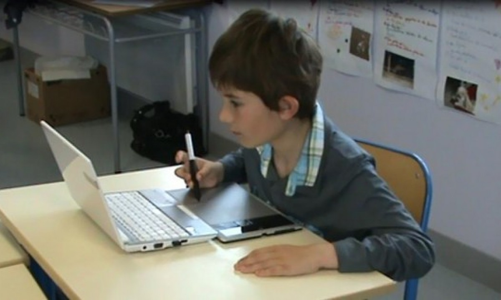

Información del juego
El juego busca ayudar a los niños con trastornos del espectro autista (TEA) a través de una interfaz amigable donde el niño puede interactuar con pictogramas para relacionarlos con los sonidos para aumentar su habilidades cognitivas, sociales.
En cada etapa encontrarás diferentes temas que abarcan en la vida cotidiana, descubrir las diferentes emociones y formas de expresarnos, las cosas y alimentos que hay en casa y/o colegio.
Asimismo, busca romper barreras sobre la accesibilidad web para niños con TEA y al mismo tiempo cumpliendo con los principios del diseño universal.

Entendido